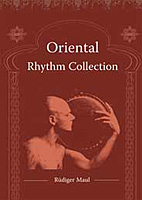

Blog
Blog
Seit vielen Jahren Musiker und Percussionlehrer. Dreijährige Ausbildung in brasilianischer Percussion bei Dudu Tucci, ebenfalls dreijährige Ausbildung in Cuban Percussion bei Andres Mollino. Absolvent der Latin Percussion-School Munich und der Pentaton Percussion-School Wuppertal bei Martin Verdonk (Prinz, Santana…). Fortbildungen u.a. bei: Louis Conte (L.A. Studio), Giovanni Hidalgo, Sulemanor Amanor Ofori, Famadou Konate, Glenn Velez (Framedrums), Jarrod Cagwin, Pedro Estevan, Ramesh Shotham u.v.a. Langjährige Tätigkeit als Live- und Studio-musiker in den Bereichen Folk und Jazz, aber auch für Theater und Filmmusik. Zusammenarbeit u.a. mit Martin Weiß, Udo Jürgens, Artists for Nature…
Verfasser zweier Rhythmussammlungen: “Oriental Rhythm Collection” und “Latin Rhythm Collection”. Ebenso entstand mit dem Schamanen Christian Vogel die schamanistische Arbeits-CD “Schamanenpfade” Instrumente: Darabuka, Framedrums (Tar, Muzhar, Riqq…), Davul, Timba, Taiko und diverse andere Percussioninstrumente Homepage: www.ruedigermaul.de
